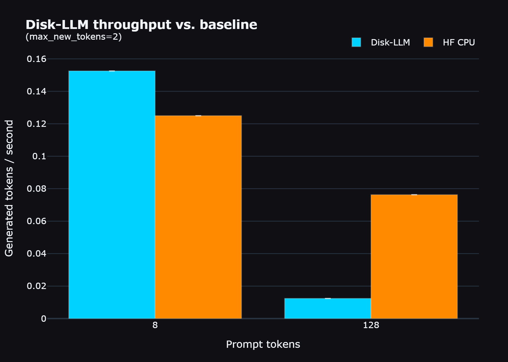

Use the pipeline. Publish after the audit.
Disk-LLM works best when inspection, conversion, generation, benchmarking, and review are treated as one chain. The project now enforces that more clearly by refusing to save benchmark rows when telemetry shows a zero-layer execution path.
text_config correctly and resolves model.language_model.layers.*. The remaining runtime milestone is a native linear_attention adapter before a new Disk-LLM vs HF benchmark should be treated as final.

Base package first, then the optional extras.
Keep the core importable with minimal dependencies, then layer in Hugging Face, plotting, demo, and testing support when you need them.
pip install -e . pip install -e .[hf,demo,test,bench]
Inspect, convert, verify, then generate.
The repo is designed so you can understand the model before you ever benchmark it.
disk-llm inspect --source-dir /path/to/Qwen3.5-9B disk-llm convert /path/to/Qwen3.5-9B ./packed-qwen35 disk-llm inspect --manifest ./packed-qwen35/manifest.json disk-llm generate ./packed-qwen35/manifest.json \ --prompt "Explain disk-backed inference in one paragraph."
- The default packer targets the text path and records skipped multimodal tensors in the manifest.
- Manifests now resolve both `model.layers.*` and `model.language_model.layers.*` during inspection.
- For Qwen 3.5 specifically, nested `text_config` values are now surfaced correctly to the runtime.
Benchmarks are part of the codebase, not an afterthought.
The benchmark harness exports repeatable CSVs, RSS timelines, and comparison plots. It also now refuses to save misleading zero-layer Disk-LLM runs.
python scripts/benchmark.py ./packed-qwen35/manifest.json \ --prompt "Explain disk-backed inference in one paragraph." \ --tokenizer /path/to/Qwen3.5-9B \ --backends disk_llm,hf_cpu \ --hf-model /path/to/Qwen3.5-9B \ --prompt-lengths 8,64,256,512 \ --max-new-tokens 16 \ --runs 3 \ --output-dir ./benchmark-results/qwen35-cpu python scripts/plot_results.py ./benchmark-results/qwen35-cpu
benchmark_runs.csv, benchmark_summary.csv, memory_timeline.csv, benchmark_metadata.json, plots, and Markdown summary output.
Keep the model off your local machine.
The remote runner downloads the model into a Modal volume, converts it there, runs the benchmark workflow there, and saves the result bundle there.
powershell -ExecutionPolicy Bypass -File .\scripts\run_modal_qwen35_9b.ps1 # or bash scripts/run_modal_qwen35_9b.sh
- The runbook lives in
docs/modal_remote_run.md. - The remote workflow writes source inspection, packed inspection, CSVs, plots, and a run report into the Modal volume.
- The repo already contains one real archived Qwen 3.5 Modal artifact bundle in
modal-results.
Keep the old run visible, but frame it honestly.
The existing Modal plots remain useful as evidence that the pipeline ran end to end. They should not be treated as the final validated benchmark headline until the Qwen 3.5 linear-attention runtime path is implemented and rerun.
